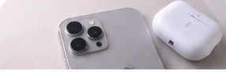

Hachioji
MEDIA
発信する ↘ CREATOR
挑戦する↙ DEVELOPMENT
つくる ↗

ハチおじ。
発信する。つくる。広げていく。
iPhone・ガジェットの情報発信から、
Web制作やITの挑戦まで。
ハチおじの活動をまとめた公式サイトです。
SCROLL
好きなことに、
境界線は
いらない。
ガジェットの発信も、ITの学びも、制作も。
ひとつに縛られず、面白いと思ったことを
形にしていく。それがハチおじのスタイルです。
CREATE
SHARE
GROW
SHARE
GROW
ハチおじとは？
異なる経験を掛け合わせて、
「伝える」「つくる」「広げる」を
実践するクリエイターです。
Healthcare
理学療法士として約10年間勤務
臨床・新人教育を通じて人と向き合ってきた経験
✳
臨床・新人教育を通じて人と向き合ってきた経験
Media
Apple・ガジェットの
情報発信
◉
情報発信
Technology
ITエンジニアとしての
挑戦と制作
⌘
挑戦と制作
数字が語る、積み重ね。
年間ページビュー
noteで年間50万PVを2年連続達成
5
YEARS
ライター・
ブロガー歴5年
ブロガー歴5年
10
YEARS
理学療法士としての経験
臨床・新人教育
19
YEARS
Apple歴 19年
主な活動領域。

WRITING / MEDIA
伝える。
iPhoneやガジェットのレビュー・比較・活用術など、読者の疑問を解決する情報を発信しています。
const hachioji = {
create: true,
learn: true,
grow: true
};
create: true,
learn: true,
grow: true
};
ENGINEERING / DEVELOPMENT
つくる。
ITインフラの経験を土台に、Webサイトやアプリなど、アイデアを形にする活動に取り組んでいます。
HEALTHCARE / BODY CARE
整える。
理学療法士として約10年間培った経験を土台に、身体と向き合う新たな挑戦へ。整体師としての活動を開始予定です。
代表的な実績。

Writing
Review
Apple製品・ガジェットのレビュー
noteで公開している代表記事
<section class="portfolio">
<h1>Hachioji</h1>
<p>Create and grow.</p>
</section>
<h1>Hachioji</h1>
<p>Create and grow.</p>
</section>
Project
Development
Web制作・個人開発プロジェクト
公開できる制作物から順次追加
これから、もっと面白く。
Now
発信・レビュー・ポートフォリオ整備
Next
開発作品の公開（アプリ・ツール ほか）
整体師としての活動開始を予定
Future
サービスや新しい活動への展開
一緒に、
面白いことを。
メッセージはXのDMへお願いします。